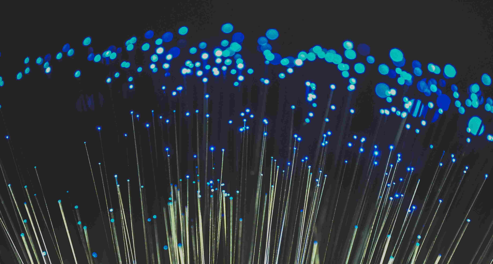
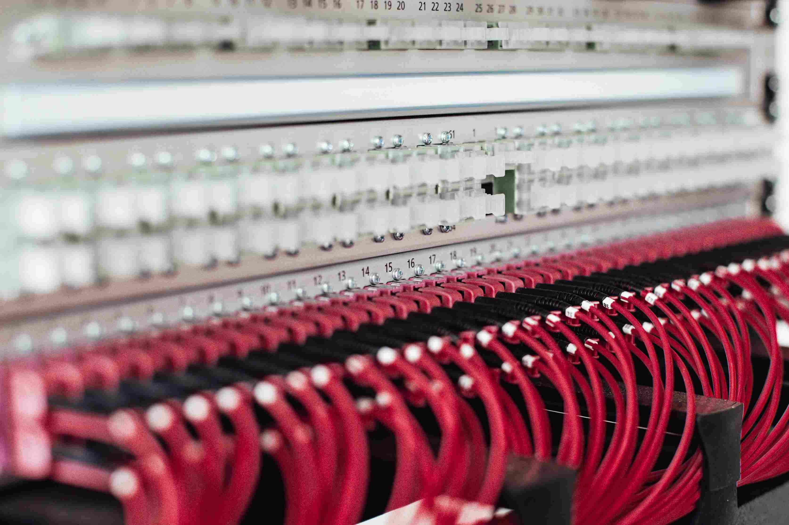

資訊電機學院
不分系學士班
電機工程專長
電機領域在低年級的基礎理論課程，主要為培養學生專業知識，使學生具備運用數學、科學及電機工程知識以及執行電機工程實務所需技術、技巧及使用工具之核心能力。
高年級課程延續必修理論課程，規劃「電子類別」、「固態類別」、「系統與生醫類別」、「電波類別」等四類別選修課程，提供學生依個人興趣，自由跨類別選修電機資訊各領域課程。
資訊工程專長
資電學士班資工專長領域修課内容，除必修科目外，主要透過研究學群的畫分，使學生能依據其性向、能力及就業需求規劃其選課内容。
課程重視實務設計，並依據資訊電腦相關領域需求設計相關的專業課程，以培養學生程式設計、邏輯、數學運算、資料運算、網通資安、軟體硬體開發及設計的能力。

通訊工程專長
通訊工程專長領域，可再細分為通訊系統及訊號處理兩組，並可與電機系電波組領域專長整合規劃。
通訊系統主要研究項目包括無線通訊、行動通訊、數位傳輸等技術；訊號處理主要研究項目包括音視訊處理、電腦視覺、通訊訊號處理、多媒體通訊等技術。

網路工程專長
網路專長領域著重在包括有線、無線通訊網路技術，及網路各種應用與服務之開發。
修課內容除包括資電領域之共同必修基礎科目外，還包括兩大重點主題：一是通訊及網路基本原理與技術（如訊號與系統，計算機網路等），另一是與網路應用與服務相關的資訊與軟體技術（如作業系統、資料結構、演算法等）。